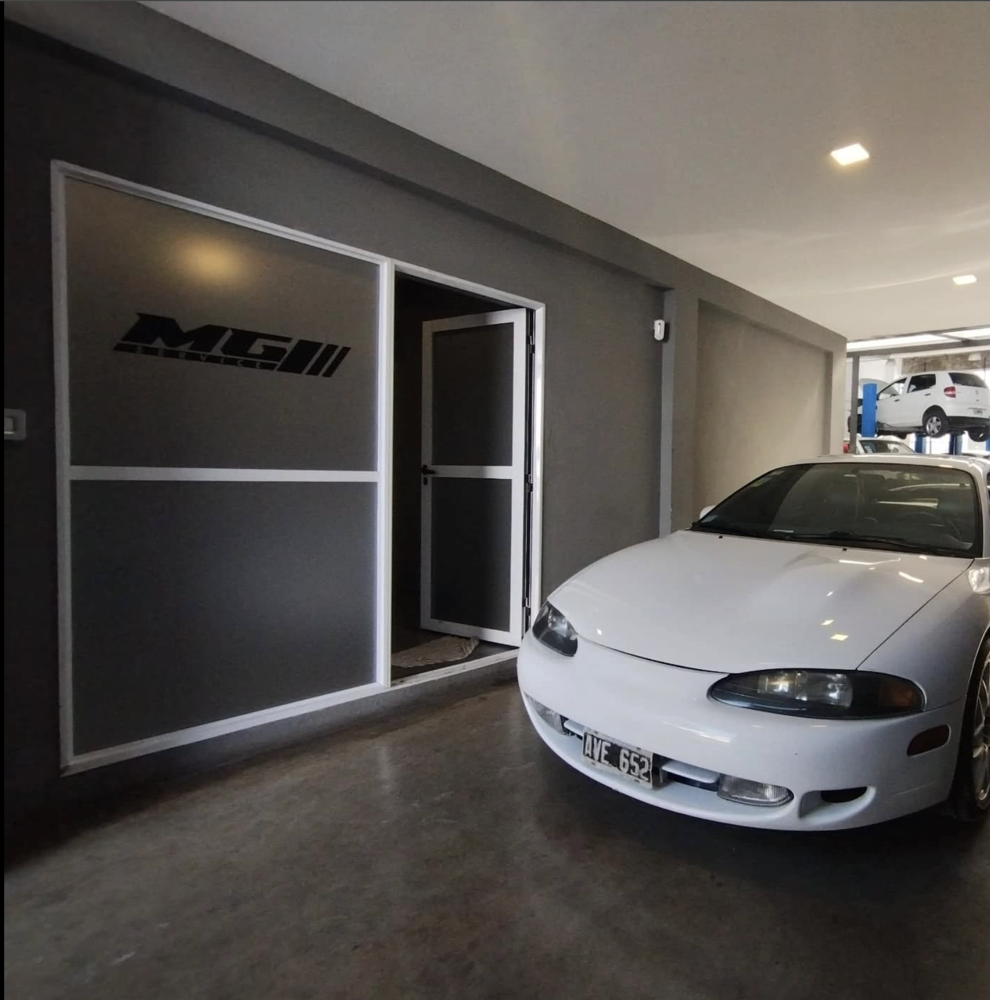

Para quienes no dejan
su auto en cualquier lado
Especialistas en cajas mecánicas y automáticas, mecánica integral y diagnóstico de última generación para vehículos premium y multimarca, en zona sur del Gran Buenos Aires.
Diferenciales reales, no promesas
Cada punto de esta lista es algo que podés verificar la primera vez que dejás tu auto.
Especialistas en cajas
Reparación y mantenimiento de cajas mecánicas y automáticas, el servicio que la mayoría de los talleres evita.
Marcas premium
Trabajamos con BMW, Audi, Mercedes-Benz y otras marcas de alta gama, además de multimarca general.
Diagnóstico de última generación
Equipamiento de escaneo profesional para identificar la falla real, no la más probable.
Presupuesto por escrito
Sabés cuánto y en cuánto tiempo antes de que toquemos el auto.
Piezas y fotos del trabajo
Te devolvemos las piezas reemplazadas y documentamos el proceso.
Todo en un solo lugar
Mecánica integral, inyección, frenos, climatización, chapa y pintura, y gestión de seguros.

Cajas mecánicas y automáticas
La caja de cambios es uno de los sistemas más complejos del auto, y el que más se evita en talleres generales.
En MG Service trabajamos cajas mecánicas y automáticas con el mismo nivel de detalle que una concesionaria oficial — diagnóstico preciso, reparación con criterio técnico y un presupuesto claro antes de empezar.
Conocer el servicioMarcas con las que trabajamos
Cómo trabajamos
Nos contás qué pasa
Por WhatsApp o en el taller, contanos qué le pasa al auto o qué service necesita.
Revisamos con precisión
Usamos equipamiento de última generación para identificar la falla real.
Te lo damos por escrito
Sabés qué se hace, cuánto cuesta y en cuánto tiempo, antes de autorizar nada.
Con respaldo
Te devolvemos el auto con las piezas reemplazadas y fotos del trabajo realizado.
Preguntas frecuentes
Depende del sistema a revisar, pero te damos un tiempo estimado apenas recibimos el auto, y el presupuesto final antes de empezar cualquier trabajo.
Trabajamos con BMW, Audi, Mercedes-Benz y otras marcas premium, además de atención multimarca general — consultanos por tu modelo puntual.
No avanzamos con nada que no esté en el presupuesto escrito original sin consultarte antes.
Sí, te las devolvemos junto con fotos del proceso.
Por WhatsApp, contándonos qué le pasa al auto o qué service necesita.
Coordiná tu turno hoy
Contanos qué necesita tu vehículo y te respondemos por WhatsApp en el horario de atención.
Hablar por WhatsApp